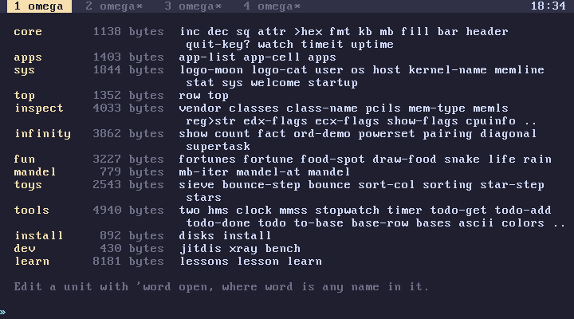
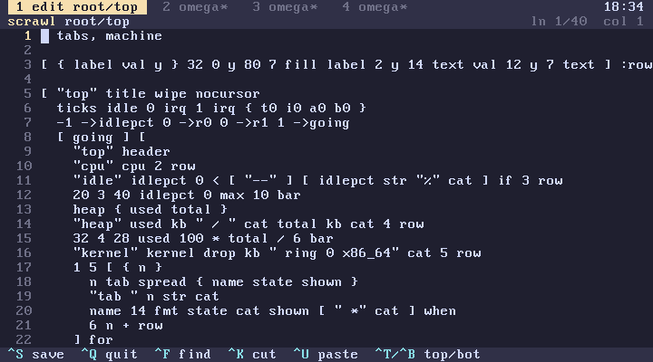

subverge
subvergeRoot
Root holds the omega programs that come with Subverge, and you can edit it while the system runs. Words that every tab should see belong here too. An edit only goes live if it builds, so a mistake can't break root.
Units
Root is split into units, one per file in root/, each starting with #>> name. They run in order at boot, so a unit can use anything defined before it. root lists them:

| Unit | What's in it |
|---|---|
core |
sq inc dec fmt bar header watch timeit sum fold uptime and other helpers |
apps |
apps and its list |
sys |
the logos, sys, welcome, startup |
top |
top |
inspect |
pcils memls cpuinfo irqmon hexview |
infinity |
count ord-demo powerset pairing diagonal supertask |
fun |
fortune snake life rain tiles |
mandel |
mandel mandel-at |
toys |
sieve bounce sorting stars |
tools |
clock stopwatch timer todo bases convert password ascii colors pong date month cal |
install |
disks install |
dev |
jitdis xray bench |
learn |
learn and its lessons |
Editing a unit
'top open
opens the unit that defines top in scrawl. Nothing changes until you leave the editor.

On exit, the edited unit and every unit after it are run again on top of the earlier ones. If they all build, the new root replaces the old one at once, every tab sees it, and it is saved. If anything fails, root is left unchanged:
root unchanged, top: foo isn't defined (your edit is kept: open it again)
The edit is kept as a draft, marked (draft) by root, and the next 'top open reopens it for fixing. back doesn't affect root.
Shadowing
A unit can redefine a built-in. When that happens, the rebuild prints shadows: and the names in orange.
Saved root fails to build
This usually happens after a kernel upgrade. Subverge prints the saved root didn't build, using the built-in one and boots with the kernel's own root. The saved root is kept until the next root edit overwrites it.
To add your own, see units, and to list a program in apps, see apps.